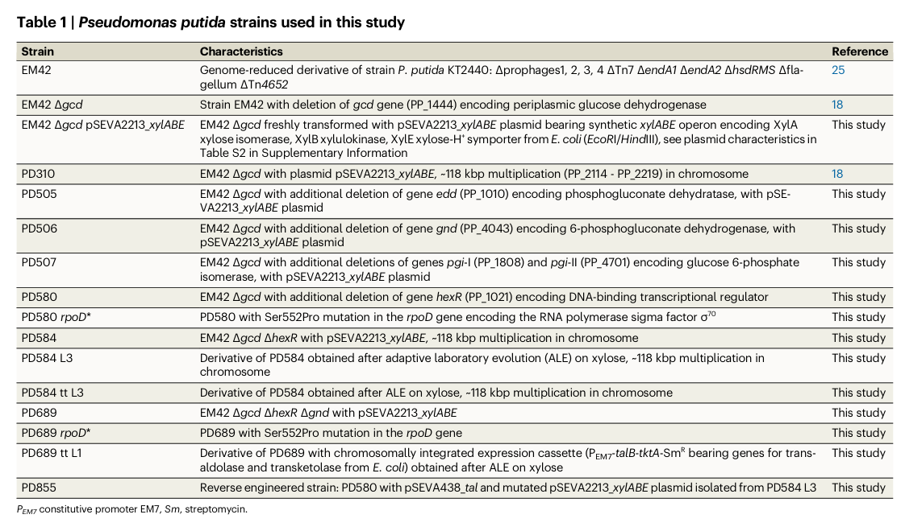

RpoD (sigma-70, sigma-A; PP_0387) is the primary (housekeeping/vegetative) sigma factor of Pseudomonas putida KT2440. As a dissociable, promoter-specificity subunit of RNA polymerase, it binds transiently to the RNAP catalytic core to form the holoenzyme and directs it to the majority of promoters used during exponential growth. RpoD belongs to the sigma-70 factor family (RpoD/SigA subfamily) and has the canonical multi-domain architecture: region 1.1 (autoinhibitory), region 2 (which contacts and melts the -10 promoter element to nucleate the open complex), region 3 (extended -10 recognition), and region 4 (which recognizes the -35 promoter element via a helix-turn-helix motif). After initiation it is released from the core enzyme. RpoD operates in the cytoplasm/nucleoid as part of the RNAP holoenzyme engaging chromosomal promoter DNA, and competition between RpoD and alternative sigma factors for a limiting pool of core RNAP is a major determinant of condition-dependent gene expression. Sigma factors are not catalytic enzymes; RpoD acts as a sequence- specific DNA-binding transcription initiation factor that establishes the housekeeping transcriptional program.
| GO Term | Evidence | Action | Reason |
|---|---|---|---|
|
GO:0003677
DNA binding
|
IEA
GO_REF:0000120 |
KEEP AS NON CORE |
Summary: RpoD binds promoter DNA via its conserved sigma-70 regions; region 4 recognizes the -35 element through a helix-turn-helix motif (annotated in UniProt at residues 576-595) and region 2 contacts the -10 element. DNA binding is a genuine, well-supported molecular activity.
Reason: Correct but generic. The more specific and informative molecular function for this protein is sigma factor activity (GO:0016987), which captures the promoter-recognition role; DNA binding is retained as supporting but non-core.
|
|
GO:0003700
DNA-binding transcription factor activity
|
IEA
GO_REF:0000002 |
MARK AS OVER ANNOTATED |
Summary: This InterPro2GO annotation assigns generic DNA-binding transcription factor activity. By GO convention bacterial sigma factors are not modeled as DNA-binding transcription factors (which act at specific operator sites); their function as the promoter-specificity subunit of RNA polymerase is captured by sigma factor activity (GO:0016987).
Reason: Over-annotation arising from a broad InterPro-to-GO mapping. Sigma factor activity (GO:0016987) is the appropriate, mutually-exclusive molecular function for a sigma factor, so GO:0003700 should not be retained as a core function.
|
|
GO:0005737
cytoplasm
|
IEA
GO_REF:0000120 |
ACCEPT |
Summary: RpoD acts in the cytoplasm/nucleoid as part of the RNA polymerase holoenzyme engaging chromosomal promoter DNA. Cytoplasmic localization is consistent with UniProt subcellular location and the function of a soluble RNAP subunit.
Reason: Correct cellular component for a cytoplasmic RNA polymerase holoenzyme subunit; appropriate, if broad, localization annotation.
|
|
GO:0006352
DNA-templated transcription initiation
|
IEA
GO_REF:0000120 |
ACCEPT |
Summary: RpoD is the sigma factor that confers promoter specificity for transcription initiation by RNA polymerase during exponential growth. This is the central biological process the protein participates in.
Reason: Accurately describes the core process; directly supported by the conserved housekeeping sigma factor role.
|
|
GO:0006355
regulation of DNA-templated transcription
|
IEA
GO_REF:0000002 |
KEEP AS NON CORE |
Summary: By determining which promoters are transcribed, RpoD regulates transcription. This is correct but a broad parent of the more specific transcription initiation process.
Reason: True but general; the specific initiation processes (GO:0006352 and GO:2000142) better capture the core function. Retained as non-core.
|
|
GO:0010468
regulation of gene expression
|
IEA
GO_REF:0000104 |
KEEP AS NON CORE |
Summary: A very broad biological process term reflecting RpoD's role in directing gene expression. Correct but high-level.
Reason: Overly general grouping term; more specific transcription initiation terms describe the actual function. Retained as non-core.
|
|
GO:0016987
sigma factor activity
|
IEA
GO_REF:0000120 |
ACCEPT |
Summary: Sigma factor activity is the precise molecular function of RpoD: it binds RNA polymerase core to form the holoenzyme and confers promoter recognition specificity. This is the defining, core molecular function.
Reason: Most specific and informative molecular function term for this protein; strongly supported by family/domain architecture and the conserved housekeeping sigma role.
|
|
GO:2000142
regulation of DNA-templated transcription initiation
|
IEA
GO_REF:0000108 |
ACCEPT |
Summary: Logically inferred from sigma factor activity (GO:0016987). RpoD regulates which promoters are recognized at the initiation step, so it regulates DNA-templated transcription initiation.
Reason: Appropriate and consistent with the molecular function; captures the initiation-specific regulatory role of the housekeeping sigma factor.
|
Q: What is the genome-wide RpoD (sigma-70) regulon in P. putida KT2440, e.g. by ChIP-seq/ChIP-exo, and how does it overlap with alternative sigma factors?
Q: Is PP_0387 genetically essential in KT2440 (e.g. by conditional depletion), as expected for a primary sigma factor?
Experiment: ChIP-seq of RpoD-RNAP holoenzyme in exponentially growing KT2440 to define the sigma-70 promoter occupancy genome-wide.
Experiment: Conditional depletion or degron tagging of PP_0387 to test essentiality and characterize the transcriptional collapse upon RpoD loss.
The research report should be a detailed narrative explaining the function, biological processes, and localization of the gene product. Citations should be given for all claims.
You should prioritize authoritative reviews and primary scientific literature when conducting research. You can supplement
this with annotations you find in gene/protein databases, but these can be outdated or inaccurate.
We are specifically interested in the primary function of the gene - for enzymes, what reaction is catalyzed, and what is the substrate specificity? For transporters, what is the substrate? For structural proteins or adapters, what is the broader structural role? For signaling molecules, what is the role in the pathway.
We are interested in where in or outside the cell the gene product carries out its function.
We are also interested in the signaling or biochemical pathways in which the gene functions. We are less interested in broad pleiotropic effects, except where these elucidate the precise role.
Include evidence where possible. We are interested in both experimental evidence as well as inference from structure, evolution, or bioinformatic analysis. Precise studies should be prioritized over high-throughput, where available.
The UniProt target Q88QU7 corresponds to rpoD in Pseudomonas putida KT2440 (ordered locus PP_0387) and encodes the RNA polymerase sigma factor σ70 (RpoD)—the primary (“housekeeping”) sigma factor used predominantly during exponential growth. This matches the sigma-70 family/RpoD (SigA) subfamily designation and the σ70-domain architecture described in the prompt and in the KT2440 literature. (lopezlara2020influenceofrehydration pages 2-4, benignoUnknownyearmicrobialsinglecellrna pages 81-83, dvorak2024syntheticallyprimedadaptationof pages 2-3)
In bacteria, sigma (σ) factors are promoter specificity subunits that associate with the RNA polymerase (RNAP) core enzyme to form a holoenzyme capable of promoter-specific transcription initiation. The “housekeeping” sigma factor σ70 (RpoD) is the predominant sigma factor directing transcript initiation at the majority of promoters in many Proteobacteria, and it is commonly described as the primary/vegetative sigma factor. (busby2024transcriptionactivationin pages 1-4, bouillet2024rposandthe pages 1-5)
A central mechanistic concept is that σ70-family sigma factors contain conserved domains used for promoter recognition and DNA opening. In authoritative 2024 synthesis, σ70-like housekeeping sigma factors are described as having four independently folding domains; Domain 2 drives transcription-bubble formation and interacts with the -10 region, while Domains 3 and 4 contribute promoter-binding specificity (e.g., domain 4 recognizes bases in the -35 element; domain 3 recognizes the extended -10). (busby2024transcriptionactivationin pages 1-4)
σ70 directs RNAP to promoters mainly by sequence recognition of the canonical -10 and -35 promoter elements, mediated by conserved sigma regions/domains. Mechanistic review/overview sources summarize that σ factors (including σ70/RpoD) recognize promoter DNA elements and enable open complex formation (local DNA melting) around the transcription start site. (busby2024transcriptionactivationin pages 1-4, bouillet2024rposandthe pages 1-5)
A complementary mechanistic description emphasizes that σ70 promoter recognition involves distinct contacts: the -35 element is recognized by σ region/domain 4, and the -10 element by σ region/domain 2; through this, sigma factors define promoter usage and thus regulon structure. (hinton2025transcriptionalreprogrammingby pages 1-3)
A defining systems-level concept is competition among sigma factors for limiting RNAP core. In 2024 review treatment of σ-factor biology (framed around stress response), competition with the “vegetative” sigma (RpoD/σ70) is described as a primary determinant of which promoter sets are transcribed under particular conditions (growth vs. stress programs). (bouillet2024rposandthe pages 5-7)
Primary function: RpoD is the σ70 sigma factor that binds RNAP core and directs it to σ70-dependent promoters to initiate transcription, especially during exponential growth. In KT2440 transcriptomics of desiccation/rehydration, rpoD is explicitly annotated as “RNA polymerase sigma 70 factor (gene rpoD, PP_0387)”, and the authors explicitly state that RpoD is the primary sigma factor during exponential growth. (lopezlara2020influenceofrehydration pages 2-4)
Not an enzyme/transport reaction: RpoD is not a metabolic enzyme and does not catalyze a chemical transformation; instead it is a transcription initiation specificity factor controlling gene expression programs via promoter recognition. (busby2024transcriptionactivationin pages 1-4, lopezlara2020influenceofrehydration pages 2-4)
Growth-associated transcription and translation capacity. In P. putida KT2440, downregulation of rpoD in desiccated cells after prolonged rehydration was interpreted as consistent with a non-growing state. The same study connects rpoD repression with decreased expression of ribosomal protein genes, stating that σ70-RNAP transcribes genes encoding ribosomal proteins; thus, reduced rpoD expression coincides with reduced translation capacity. (lopezlara2020influenceofrehydration pages 2-4)
Control of σ70-dependent virulence/competition machinery (T6SS) in P. putida. In KT2440, the K1-type VI secretion system (K1-T6SS) gene cluster was shown to be organized into two transcriptional units driven by four σ70-dependent promoters, and the authors state that σ70 is the housekeeping sigma factor (also known as RpoD/σA). This provides direct organism-level evidence that native functional loci in KT2440 are transcribed from σ70-dependent promoters. (bernal2023transcriptionalorganizationand pages 2-4)
Stationary phase transition/stress contexts (transcript abundance). In a KT2440 relA/spoT mutant (defective in stringent response), RNA-seq measurements reported rpoD (PP_0387) transcript values of 2845.4 vs 2825.1 with a fold change of ~1.1 down, and the authors state that rpoD (along with rpoS and rpoN) did not show statistically significant transcript changes between exponential and stationary phase in that mutant background. (mozejkociesielska2017mediumchainlengthpolyhydroxyalkanoatessynthesis pages 9-10)
Direct experimental localization (e.g., fluorescence microscopy) for KT2440 RpoD was not identified in the retrieved sources. Functionally, sigma factors operate in the cytoplasm/nucleoid region as part of the RNAP holoenzyme engaging chromosomal DNA at promoters; this is consistent with the general description that σ factors bind promoter DNA as part of the RNAP holoenzyme to initiate transcription. (busby2024transcriptionactivationin pages 1-4, joron2024evidencefora pages 1-4)
A 2024 Nature Communications study on synthetically primed adaptation of P. putida to D-xylose reports strains carrying an rpoD* allele with a Ser552Pro substitution and explicitly describes rpoD as encoding RNAP sigma factor σ70. This is strong recent evidence that modest changes in the primary sigma factor can emerge or be used during laboratory adaptation/strain engineering. (dvorak2024syntheticallyprimedadaptationof pages 3-4, dvorak2024syntheticallyprimedadaptationof pages 2-3)
A visual confirmation of this strain list and mutation annotation is provided in the paper’s Table 1 (cropped). (dvorak2024syntheticallyprimedadaptationof media 92d25f8a)
A 2024 primary study (in E. coli, but mechanistically relevant to σ70 factors) provides evidence that free (apo) σ70 can adopt a compact conformation and becomes extended upon RNAP binding, exposing DNA-binding surfaces for high-affinity promoter recognition. This contributes to current understanding of σ70 regulation and initiation competency—conceptually relevant when interpreting how rpoD mutations or regulatory factors could modulate transcription in engineered strains. (joron2024evidencefora pages 1-4, joron2024evidencefora pages 10-14)
A 2023 primary study experimentally defined promoter architecture and regulation of the KT2440 K1-T6SS locus and concluded that its promoters contain typical features of σ70-dependent promoters and that the cluster is controlled by multiple global regulators (e.g., induced in stationary phase, repressed indirectly by RpoS; repressed by RpoN/FleQ; activated by GacS–GacA; repressed by RetS). While not exclusively about rpoD, this study is highly informative for σ70-dependent promoter use in KT2440’s competitive interactions. (bernal2023transcriptionalorganizationand pages 2-4)
Because rpoD is widely treated as a housekeeping gene in pseudomonads, it is frequently used for normalization in RT-qPCR workflows.
KT2440 research frequently relies on identifying or engineering σ70-dependent promoters for predictable transcription. The K1-T6SS study provides a concrete example where four σ70-dependent promoters were mapped and then interrogated using lacZ reporter constructs; promoter fragments (hundreds of base pairs) were cloned upstream of lacZ to quantify expression and regulation across conditions/mutant backgrounds. (bernal2023transcriptionalorganizationand pages 2-4)
Additionally, a KT2440 light-response study cloned the PrpoD (PP_0387) promoter fragment into a lacZ reporter plasmid (pMElacZ) and introduced it into KT2440 and mutants for in vivo promoter assays (light/dark; M9 medium; β-galactosidase readout). This demonstrates direct experimental use of the native rpoD promoter as a reporter element. (sumi2020lightresponseof pages 28-31)
A leading 2024 review summarizes sigma factors as central transcriptional specificity units and describes RpoD-like sigma factors as housekeeping regulators, with promoter recognition mediated by σ2 and σ4 interactions with -10 and -35 elements; it also emphasizes σ-factor competition for core RNAP as a major driver of condition-dependent gene expression. (bouillet2024rposandthe pages 1-5, bouillet2024rposandthe pages 5-7)
A separate 2024 authoritative review of transcription activation emphasizes the housekeeping role of σ70/rpoD in coordinating initiation at most promoters and describes the mechanistic steps from promoter recognition to open complex formation. (busby2024transcriptionactivationin pages 1-4)
These sources collectively support the expert-level interpretation that P. putida KT2440 rpoD’s primary function is to direct RNAP to housekeeping promoters and maintain the transcriptional program for active growth, while alternative sigma factors and global regulators reshape this program under stress or specialized conditions. (busby2024transcriptionactivationin pages 1-4, bouillet2024rposandthe pages 1-5, bouillet2024rposandthe pages 5-7)
Key quantitative findings and implementation details drawn from KT2440 and related Pseudomonas studies include:
The following tables summarize identity verification, key functional concepts, organism-specific findings, and quantitative/application data.
| Claim/Concept | Evidence summary | Organism/Context | Source (authors year journal) | URL | Citation ID |
|---|---|---|---|---|---|
| Verified identity of target protein | UniProt target Q88QU7 matches rpoD in Pseudomonas putida KT2440; literature excerpts identify rpoD, PP_0387 as the RNA polymerase sigma-70 factor/RpoD. | P. putida KT2440 | López-Lara et al. 2020 Annals of Microbiology; Benigno et al. unknown journal; Dvořák et al. 2024 Nature Communications | https://doi.org/10.1186/s13213-020-01596-3 ; https://doi.org/10.1038/s41467-024-46812-9 | (lopezlara2020influenceofrehydration pages 2-4, benignoUnknownyearmicrobialsinglecellrna pages 81-83, dvorak2024syntheticallyprimedadaptationof pages 2-3) |
| Primary molecular function | RpoD/σ70 is the primary/housekeeping sigma factor that associates with RNAP core to confer promoter specificity and initiate transcription at housekeeping promoters. | General bacterial σ70 framework, applicable to KT2440 annotation | Bouillet et al. 2024 MMBR; Busby & Browning 2024 EcoSal Plus | https://doi.org/10.1128/mmbr.00151-22 ; https://doi.org/10.1128/ecosalplus.esp-0039-2020 | (busby2024transcriptionactivationin pages 1-4, bouillet2024rposandthe pages 1-5, bouillet2024rposandthe pages 5-7) |
| Promoter recognition domains | Conserved σ70-family domains mediate promoter recognition: σ2 recognizes the -10 element, σ4 recognizes the -35 element; domain 3 can recognize extended -10 motifs, and these interactions position RNAP for open-complex formation. | Mechanistic model for bacterial σ70 factors | Busby & Browning 2024 EcoSal Plus; Hinton 2025 EcoSal Plus | https://doi.org/10.1128/ecosalplus.esp-0039-2020 ; https://doi.org/10.1128/ecosalplus.esp-0006-2025 | (hinton2025transcriptionalreprogrammingby pages 1-3, busby2024transcriptionactivationin pages 1-4) |
| Structural current understanding | 2024 evidence supports that free σ70 can adopt a compact apo conformation and becomes extended upon RNAP binding, exposing DNA-binding surfaces needed for high-affinity promoter recognition and transcription initiation. | Experimental σ70 biophysics; informs interpretation of RpoD function | Joron et al. 2024 iScience | https://doi.org/10.1101/2022.10.14.512049 | (joron2024evidencefora pages 1-4, joron2024evidencefora pages 10-14) |
| Expression behavior in P. putida stress physiology | In desiccated/rehydrated KT2440 cells, rpoD (PP_0387) was repressed; authors interpret this as consistent with reduced growth/protein synthesis because RpoD is the primary sigma factor during exponential growth. | P. putida KT2440 VBNC/resuscitation study | López-Lara et al. 2020 Annals of Microbiology | https://doi.org/10.1186/s13213-020-01596-3 | (lopezlara2020influenceofrehydration pages 2-4) |
| Expression behavior in stationary-phase transition | In a relA/spoT mutant, RNA-seq reported rpoD/PP_0387 with only ~1.1-fold down and no statistically significant change between exponential and stationary phase, indicating stable transcript abundance in that background. | P. putida KT2440 relA/spoT mutant during mcl-PHA process | Mozejko-Ciesielska et al. 2017 AMB Express | https://doi.org/10.1186/s13568-017-0396-z | (mozejkociesielska2017mediumchainlengthpolyhydroxyalkanoatessynthesis pages 9-10) |
| σ70 dependence of native promoters in P. putida | The K1-T6SS cluster contains four σ70-dependent promoters; most T6SS promoters are described as dependent on the housekeeping sigma factor σ70/RpoD. | P. putida KT2440 K1 type VI secretion system | Bernal et al. 2023 Microbiology | https://doi.org/10.1099/mic.0.001295 | (bernal2023transcriptionalorganizationand pages 2-4) |
| Experimental PrpoD reporter use | A PrpoD (PP_0387) promoter fragment was cloned into a lacZ reporter plasmid and introduced into KT2440/mutants for in vivo promoter assays under light/dark conditions, demonstrating direct experimental use of the native rpoD promoter. | P. putida KT2440 promoter-reporter assay | Sumi et al. 2020 Journal of Bacteriology | https://doi.org/10.1128/jb.00146-20 | (sumi2020lightresponseof pages 28-31) |
| Recent mutation evidence | Recent adaptive-evolution work identified/used rpoD* alleles with Ser552Pro substitutions in KT2440 derivatives, explicitly annotating rpoD as encoding RNAP sigma factor σ70. | Engineered/evolved P. putida xylose-utilizing strains | Dvořák et al. 2024 Nature Communications | https://doi.org/10.1038/s41467-024-46812-9 | (dvorak2024syntheticallyprimedadaptationof pages 3-4, dvorak2024syntheticallyprimedadaptationof pages 2-3, dvorak2024syntheticallyprimedadaptationof media 92d25f8a) |
| Application: RT-qPCR normalization | rpoD is widely used as a reference/housekeeping gene in Pseudomonas expression studies; in KT2440-related work, stability or prior validation is cited when normalizing RT-qPCR data. | KT2440 stress, chemotaxis, acetate and related studies | Peng et al. 2018 Frontiers in Microbiology; Bai et al. 2020 PLOS ONE | https://doi.org/10.3389/fmicb.2018.01669 ; https://doi.org/10.1371/journal.pone.0227927 | (peng2018comparativetranscriptomeanalysis pages 2-3, bai2020selectionandvalidation pages 9-12) |
| Application: industrial/synthetic-biology relevance | Because KT2440 is a prominent industrial and synthetic-biology chassis, understanding RpoD/σ70 is relevant for promoter choice, transcriptional load, pathway expression, and adaptation during strain engineering. | KT2440 biotechnology platform | Dvořák et al. 2024 Nature Communications; Loeschcke & Thies 2015 Applied Microbiology and Biotechnology | https://doi.org/10.1038/s41467-024-46812-9 ; https://doi.org/10.1007/s00253-015-6745-4 | (dvorak2024syntheticallyprimedadaptationof pages 3-4) |
Table: This table verifies the identity of Q88QU7 as rpoD/PP_0387 in Pseudomonas putida KT2440 and summarizes core functional concepts, organism-specific experimental evidence, and practical applications. It is useful as a compact evidence map for annotation and report writing.
| Use case | Metric/data (with units) | Experimental context | Interpretation | Source (year) | URL | Citation ID |
|---|---|---|---|---|---|---|
| Housekeeping sigma assignment in native promoter control | 4 σ70-dependent promoters identified in the K1-T6SS locus | Pseudomonas putida KT2440 K1 type VI secretion system transcriptional mapping | Direct evidence that RpoD/σ70 drives multiple native promoters in a biologically relevant competitive system | Bernal et al. (2023) | https://doi.org/10.1099/mic.0.001295 | (bernal2023transcriptionalorganizationand pages 2-4) |
| Promoter-reporter implementation | Promoter fragments cloned for functional assays: 343 bp (PtagB1), 507 bp (Phcp1), 456 bp (PvrgG1); additional regions 173 bp and 711 bp | lacZ reporter fusions and promoter analyses in P. putida KT2440 | Real-world implementation of σ70-regulated promoter analysis in KT2440 | Bernal et al. (2023) | https://doi.org/10.1099/mic.0.001295 | (bernal2023transcriptionalorganizationand pages 2-4) |
| Stress physiology readout of rpoD expression | rpoD/PP_0387 RNA-seq values 2845.4 vs 2825.1, reported fold-change 1.1 down | P. putida KT2440 relA/spoT mutant, exponential vs stationary phase during mcl-PHA process | Suggests rpoD transcript abundance remained broadly stable across this transition in the tested mutant background | Mozejko-Ciesielska et al. (2017) | https://doi.org/10.1186/s13568-017-0396-z | (mozejkociesielska2017mediumchainlengthpolyhydroxyalkanoatessynthesis pages 9-10) |
| Exponential-growth housekeeping role | Qualitative but functionally specific: rpoD identified as primary sigma factor during exponential growth | Desiccation/rehydration transcriptomics in KT2440 | Supports use of rpoD as a marker of growth-associated transcriptional capacity | López-Lara et al. (2020) | https://doi.org/10.1186/s13213-020-01596-3 | (lopezlara2020influenceofrehydration pages 2-4) |
| Reference-gene implementation in RT-qPCR workflows | 30 PCR cycles; calibration range 1×10^-3 to 1000 ng plasmid DNA; sampling at OD650 = 1.5 and 8 h after inoculation | RT-qPCR in P. putida KT2440 biosynthetic-gene expression study using rpoD as internal reference | Shows operational use of rpoD for normalization and transcript-copy correction in applied biotechnology experiments | Domröse et al. (2019) | https://doi.org/10.1038/s41598-019-43405-1 | (domrose2019pseudomonasputidardna pages 10-11) |
| Reference-gene stability under metal stress | Zinc treatments 0.2, 1.5, 2.5 mmol L^-1; growth inhibition after 6 h about 5%, 40%, 80%; RNA-seq libraries 11.3–15.8 million reads/sample with 83.4% mapping; 15 genes validated by RT-qPCR; 3 biological replicates | Zinc-stress transcriptomics in P. putida KT2440; rsd/algQ used as stable internal reference linked to RpoD regulation | Demonstrates the quantitative scale of KT2440 transcriptome studies in which RpoD-associated housekeeping control is important for normalization | Peng et al. (2018) | https://doi.org/10.3389/fmicb.2018.01669 | (peng2018comparativetranscriptomeanalysis pages 2-3) |
| Adaptive evolution / strain engineering | Ser552Pro substitution in rpoD* (reported in strains PD580/PD689) | 2024 adaptive evolution and metabolic engineering of xylose utilization in KT2440 derivatives | Recent evidence that subtle RpoD variation is selected/used during strain adaptation, underscoring its systems-level importance | Dvořák et al. (2024) | https://doi.org/10.1038/s41467-024-46812-9 | (dvorak2024syntheticallyprimedadaptationof pages 3-4, dvorak2024syntheticallyprimedadaptationof pages 2-3, dvorak2024syntheticallyprimedadaptationof media 92d25f8a) |
| Closely related Pseudomonas reference-gene validation | rpoD ranked among the most stable reference genes alongside other candidates in comparative validation pipelines | Pseudomonas brassicacearum GS20 and prior cited Pseudomonas studies | Supports transferability of rpoD as a practical normalization gene across pseudomonads, though condition-specific validation remains necessary | Bai et al. (2020) | https://doi.org/10.1371/journal.pone.0227927 | (bai2020selectionandvalidation pages 9-12) |
Table: This table compiles quantitative findings and practical implementations involving rpoD/RpoD(σ70) in Pseudomonas putida KT2440 and related pseudomonads. It is useful for linking functional annotation to measurable experimental evidence and biotechnology use.
References
(lopezlara2020influenceofrehydration pages 2-4): Lilia I. López-Lara, Laura A. Pazos-Rojas, Lesther E. López-Cruz, Yolanda E. Morales-García, Verónica Quintero-Hernández, Jesús de la Torre, Pieter van Dillewijn, Jesús Muñoz-Rojas, and Antonino Baez. Influence of rehydration on transcriptome during resuscitation of desiccated pseudomonas putida kt2440. Annals of Microbiology, Sep 2020. URL: https://doi.org/10.1186/s13213-020-01596-3, doi:10.1186/s13213-020-01596-3. This article has 16 citations and is from a peer-reviewed journal.
(benignoUnknownyearmicrobialsinglecellrna pages 81-83): V Benigno, V Sentchilo, V Cyriaque, and R Ibarra-Chávez. Microbial single-cell rna sequencing to investigate environmental triggers for iceclc transfer competence activation in pseudomonas putida. Unknown journal, Unknown year.
(dvorak2024syntheticallyprimedadaptationof pages 2-3): Pavel Dvořák, Barbora Burýšková, Barbora Popelářová, Birgitta Elisabeth Ebert, Tibor Botka, Dalimil Bujdoš, Alberto Sánchez-Pascuala, Hannah Schöttler, Heiko Hayen, Víctor de Lorenzo, Lars M. Blank, and Martin Benešík. Synthetically-primed adaptation of pseudomonas putida to a non-native substrate d-xylose. Nature Communications, Mar 2024. URL: https://doi.org/10.1038/s41467-024-46812-9, doi:10.1038/s41467-024-46812-9. This article has 37 citations and is from a highest quality peer-reviewed journal.
(busby2024transcriptionactivationin pages 1-4): Stephen J. W. Busby and Douglas F. Browning. Transcription activation in escherichia coli and salmonella. EcoSal Plus, Dec 2024. URL: https://doi.org/10.1128/ecosalplus.esp-0039-2020, doi:10.1128/ecosalplus.esp-0039-2020. This article has 15 citations.
(bouillet2024rposandthe pages 1-5): Sophie Bouillet, Taran S. Bauer, and Susan Gottesman. Rpos and the bacterial general stress response. Microbiology and Molecular Biology Reviews, Mar 2024. URL: https://doi.org/10.1128/mmbr.00151-22, doi:10.1128/mmbr.00151-22. This article has 103 citations and is from a domain leading peer-reviewed journal.
(hinton2025transcriptionalreprogrammingby pages 1-3): Deborah M. Hinton. Transcriptional reprogramming by bacteriophage t4: turning the host transcriptional machinery to the dark side. EcoSal Plus, Dec 2025. URL: https://doi.org/10.1128/ecosalplus.esp-0006-2025, doi:10.1128/ecosalplus.esp-0006-2025. This article has 1 citations.
(bouillet2024rposandthe pages 5-7): Sophie Bouillet, Taran S. Bauer, and Susan Gottesman. Rpos and the bacterial general stress response. Microbiology and Molecular Biology Reviews, Mar 2024. URL: https://doi.org/10.1128/mmbr.00151-22, doi:10.1128/mmbr.00151-22. This article has 103 citations and is from a domain leading peer-reviewed journal.
(bernal2023transcriptionalorganizationand pages 2-4): Patricia Bernal, Cristina Civantos, Daniel Pacheco-Sánchez, José M. Quesada, Alain Filloux, and María A. Llamas. Transcriptional organization and regulation of the pseudomonas putida k1 type vi secretion system gene cluster. Jan 2023. URL: https://doi.org/10.1099/mic.0.001295, doi:10.1099/mic.0.001295. This article has 15 citations and is from a peer-reviewed journal.
(mozejkociesielska2017mediumchainlengthpolyhydroxyalkanoatessynthesis pages 9-10): Justyna Mozejko-Ciesielska, Dorota Dabrowska, Agnieszka Szalewska-Palasz, and Slawomir Ciesielski. Medium-chain-length polyhydroxyalkanoates synthesis by pseudomonas putida kt2440 rela/spot mutant: bioprocess characterization and transcriptome analysis. AMB Express, May 2017. URL: https://doi.org/10.1186/s13568-017-0396-z, doi:10.1186/s13568-017-0396-z. This article has 34 citations and is from a peer-reviewed journal.
(joron2024evidencefora pages 1-4): Khalil Joron, Joanna Zamel, Nir Kalisman, and Eitan Lerner. Evidence for a compact σ70 conformation in vitro and in vivo. iScience, Dec 2024. URL: https://doi.org/10.1101/2022.10.14.512049, doi:10.1101/2022.10.14.512049. This article has 3 citations and is from a peer-reviewed journal.
(dvorak2024syntheticallyprimedadaptationof pages 3-4): Pavel Dvořák, Barbora Burýšková, Barbora Popelářová, Birgitta Elisabeth Ebert, Tibor Botka, Dalimil Bujdoš, Alberto Sánchez-Pascuala, Hannah Schöttler, Heiko Hayen, Víctor de Lorenzo, Lars M. Blank, and Martin Benešík. Synthetically-primed adaptation of pseudomonas putida to a non-native substrate d-xylose. Nature Communications, Mar 2024. URL: https://doi.org/10.1038/s41467-024-46812-9, doi:10.1038/s41467-024-46812-9. This article has 37 citations and is from a highest quality peer-reviewed journal.
(dvorak2024syntheticallyprimedadaptationof media 92d25f8a): Pavel Dvořák, Barbora Burýšková, Barbora Popelářová, Birgitta Elisabeth Ebert, Tibor Botka, Dalimil Bujdoš, Alberto Sánchez-Pascuala, Hannah Schöttler, Heiko Hayen, Víctor de Lorenzo, Lars M. Blank, and Martin Benešík. Synthetically-primed adaptation of pseudomonas putida to a non-native substrate d-xylose. Nature Communications, Mar 2024. URL: https://doi.org/10.1038/s41467-024-46812-9, doi:10.1038/s41467-024-46812-9. This article has 37 citations and is from a highest quality peer-reviewed journal.
(joron2024evidencefora pages 10-14): Khalil Joron, Joanna Zamel, Nir Kalisman, and Eitan Lerner. Evidence for a compact σ70 conformation in vitro and in vivo. iScience, Dec 2024. URL: https://doi.org/10.1101/2022.10.14.512049, doi:10.1101/2022.10.14.512049. This article has 3 citations and is from a peer-reviewed journal.
(domrose2019pseudomonasputidardna pages 10-11): Andreas Domröse, Jennifer Hage-Hülsmann, Stephan Thies, Robin Weihmann, Luzie Kruse, Maike Otto, Nick Wierckx, Karl-Erich Jaeger, Thomas Drepper, and Anita Loeschcke. Pseudomonas putida rdna is a favored site for the expression of biosynthetic genes. Scientific Reports, May 2019. URL: https://doi.org/10.1038/s41598-019-43405-1, doi:10.1038/s41598-019-43405-1. This article has 31 citations and is from a peer-reviewed journal.
(peng2018comparativetranscriptomeanalysis pages 2-3): Jun Peng, Lihong Miao, Xi Chen, and Pulin Liu. Comparative transcriptome analysis of pseudomonas putida kt2440 revealed its response mechanisms to elevated levels of zinc stress. Frontiers in Microbiology, Jul 2018. URL: https://doi.org/10.3389/fmicb.2018.01669, doi:10.3389/fmicb.2018.01669. This article has 30 citations and is from a peer-reviewed journal.
(bai2020selectionandvalidation pages 9-12): Bianxia Bai, Jiahong Ren, Fenling Bai, and Lin Hao. Selection and validation of reference genes for gene expression studies in pseudomonas brassicacearum gs20 using real-time quantitative reverse transcription pcr. PLOS ONE, 15:e0227927, Jan 2020. URL: https://doi.org/10.1371/journal.pone.0227927, doi:10.1371/journal.pone.0227927. This article has 41 citations and is from a peer-reviewed journal.
(sumi2020lightresponseof pages 28-31): Satoru Sumi, Naotaka Mutaguchi, Teppei Ebuchi, Hiroaki Tsuchida, Takahiro Yamamoto, Maki Suzuki, Chihiro Natsuka, Hatsumi Shiratori-Takano, Masaki Shintani, Hideaki Nojiri, Kenji Ueda, and Hideaki Takano. Light response of pseudomonas putida kt2440 mediated by class ii litr, a photosensor homolog. Sep 2020. URL: https://doi.org/10.1128/jb.00146-20, doi:10.1128/jb.00146-20. This article has 23 citations and is from a peer-reviewed journal.

id: Q88QU7
gene_symbol: rpoD
product_type: PROTEIN
status: DRAFT
taxon:
id: NCBITaxon:160488
label: Pseudomonas putida (strain ATCC 47054 / DSM 6125 / CFBP 8728 / NCIMB 11950 / KT2440)
description: >-
RpoD (sigma-70, sigma-A; PP_0387) is the primary (housekeeping/vegetative)
sigma factor of Pseudomonas putida KT2440. As a dissociable, promoter-specificity
subunit of RNA polymerase, it binds transiently to the RNAP catalytic core to
form the holoenzyme and directs it to the majority of promoters used during
exponential growth. RpoD belongs to the sigma-70 factor family (RpoD/SigA
subfamily) and has the canonical multi-domain architecture: region 1.1
(autoinhibitory), region 2 (which contacts and melts the -10 promoter element
to nucleate the open complex), region 3 (extended -10 recognition), and region
4 (which recognizes the -35 promoter element via a helix-turn-helix motif).
After initiation it is released from the core enzyme. RpoD operates in the
cytoplasm/nucleoid as part of the RNAP holoenzyme engaging chromosomal
promoter DNA, and competition between RpoD and alternative sigma factors for a
limiting pool of core RNAP is a major determinant of condition-dependent gene
expression. Sigma factors are not catalytic enzymes; RpoD acts as a sequence-
specific DNA-binding transcription initiation factor that establishes the
housekeeping transcriptional program.
existing_annotations:
- term:
id: GO:0003677
label: DNA binding
evidence_type: IEA
original_reference_id: GO_REF:0000120
qualifier: enables
review:
summary: >-
RpoD binds promoter DNA via its conserved sigma-70 regions; region 4
recognizes the -35 element through a helix-turn-helix motif (annotated in
UniProt at residues 576-595) and region 2 contacts the -10 element. DNA
binding is a genuine, well-supported molecular activity.
action: KEEP_AS_NON_CORE
reason: >-
Correct but generic. The more specific and informative molecular function
for this protein is sigma factor activity (GO:0016987), which captures the
promoter-recognition role; DNA binding is retained as supporting but
non-core.
- term:
id: GO:0003700
label: DNA-binding transcription factor activity
evidence_type: IEA
original_reference_id: GO_REF:0000002
qualifier: enables
review:
summary: >-
This InterPro2GO annotation assigns generic DNA-binding transcription
factor activity. By GO convention bacterial sigma factors are not modeled
as DNA-binding transcription factors (which act at specific operator
sites); their function as the promoter-specificity subunit of RNA
polymerase is captured by sigma factor activity (GO:0016987).
action: MARK_AS_OVER_ANNOTATED
reason: >-
Over-annotation arising from a broad InterPro-to-GO mapping. Sigma factor
activity (GO:0016987) is the appropriate, mutually-exclusive molecular
function for a sigma factor, so GO:0003700 should not be retained as a
core function.
- term:
id: GO:0005737
label: cytoplasm
evidence_type: IEA
original_reference_id: GO_REF:0000120
qualifier: located_in
review:
summary: >-
RpoD acts in the cytoplasm/nucleoid as part of the RNA polymerase
holoenzyme engaging chromosomal promoter DNA. Cytoplasmic localization is
consistent with UniProt subcellular location and the function of a
soluble RNAP subunit.
action: ACCEPT
reason: >-
Correct cellular component for a cytoplasmic RNA polymerase
holoenzyme subunit; appropriate, if broad, localization annotation.
- term:
id: GO:0006352
label: DNA-templated transcription initiation
evidence_type: IEA
original_reference_id: GO_REF:0000120
qualifier: involved_in
review:
summary: >-
RpoD is the sigma factor that confers promoter specificity for
transcription initiation by RNA polymerase during exponential growth.
This is the central biological process the protein participates in.
action: ACCEPT
reason: >-
Accurately describes the core process; directly supported by the
conserved housekeeping sigma factor role.
- term:
id: GO:0006355
label: regulation of DNA-templated transcription
evidence_type: IEA
original_reference_id: GO_REF:0000002
qualifier: involved_in
review:
summary: >-
By determining which promoters are transcribed, RpoD regulates
transcription. This is correct but a broad parent of the more specific
transcription initiation process.
action: KEEP_AS_NON_CORE
reason: >-
True but general; the specific initiation processes (GO:0006352 and
GO:2000142) better capture the core function. Retained as non-core.
- term:
id: GO:0010468
label: regulation of gene expression
evidence_type: IEA
original_reference_id: GO_REF:0000104
qualifier: involved_in
review:
summary: >-
A very broad biological process term reflecting RpoD's role in directing
gene expression. Correct but high-level.
action: KEEP_AS_NON_CORE
reason: >-
Overly general grouping term; more specific transcription initiation
terms describe the actual function. Retained as non-core.
- term:
id: GO:0016987
label: sigma factor activity
evidence_type: IEA
original_reference_id: GO_REF:0000120
qualifier: enables
review:
summary: >-
Sigma factor activity is the precise molecular function of RpoD: it binds
RNA polymerase core to form the holoenzyme and confers promoter
recognition specificity. This is the defining, core molecular function.
action: ACCEPT
reason: >-
Most specific and informative molecular function term for this protein;
strongly supported by family/domain architecture and the conserved
housekeeping sigma role.
- term:
id: GO:2000142
label: regulation of DNA-templated transcription initiation
evidence_type: IEA
original_reference_id: GO_REF:0000108
qualifier: involved_in
review:
summary: >-
Logically inferred from sigma factor activity (GO:0016987). RpoD
regulates which promoters are recognized at the initiation step, so it
regulates DNA-templated transcription initiation.
action: ACCEPT
reason: >-
Appropriate and consistent with the molecular function; captures the
initiation-specific regulatory role of the housekeeping sigma factor.
core_functions:
- description: >-
Primary (housekeeping) sigma factor that binds the RNA polymerase core
enzyme to form the holoenzyme and directs it to sigma-70-dependent promoters
for transcription initiation during exponential growth.
molecular_function:
id: GO:0016987
label: sigma factor activity
supported_by:
- reference_id: GO_REF:0000120
supporting_text: >-
UniProt/HAMAP MF_00963: this sigma factor is the primary sigma factor
during exponential growth and interacts transiently with the RNA
polymerase catalytic core.
- reference_id: file:PSEPK/rpoD/rpoD-deep-research-falcon.md
supporting_text: >-
KT2440 transcriptomics annotate PP_0387 as RNA polymerase sigma-70
factor (rpoD) and state RpoD is the primary sigma factor during
exponential growth; native loci (e.g. the K1-T6SS cluster) are
transcribed from sigma-70-dependent promoters.
directly_involved_in:
- id: GO:0006352
label: DNA-templated transcription initiation
- description: >-
Sequence-specific recognition of sigma-70 promoter elements (-10 and -35)
via the conserved sigma-70 regions, enabling open-complex formation and
establishment of the housekeeping transcriptional program.
molecular_function:
id: GO:0003677
label: DNA binding
supported_by:
- reference_id: GO_REF:0000120
supporting_text: >-
UniProt annotates a helix-turn-helix DNA-binding motif (residues 576-595)
and sigma-70 regions 2-4 mediating promoter recognition.
references:
- id: GO_REF:0000002
title: Gene Ontology annotation through association of InterPro records with GO terms
findings: []
- id: GO_REF:0000104
title: Electronic Gene Ontology annotations created by transferring manual GO annotations between related proteins based on shared sequence features
findings: []
- id: GO_REF:0000108
title: Automatic assignment of GO terms using logical inference, based on on inter-ontology links
findings: []
- id: GO_REF:0000120
title: Combined Automated Annotation using Multiple IEA Methods
findings: []
- id: file:PSEPK/rpoD/rpoD-deep-research-falcon.md
title: Deep research report on rpoD (Q88QU7, PP_0387) in Pseudomonas putida KT2440
findings:
- statement: >-
RpoD/sigma-70 (PP_0387) is the primary housekeeping sigma factor in KT2440,
directing RNA polymerase to sigma-70-dependent promoters during exponential
growth; multiple native loci are transcribed from sigma-70-dependent promoters.
supporting_text: >-
In KT2440 transcriptomics rpoD is annotated as RNA polymerase sigma 70 factor
(PP_0387) and described as the primary sigma factor during exponential growth;
the K1-T6SS cluster is driven by four sigma-70-dependent promoters.
- id: PMID:12534463
title: Complete genome sequence and comparative analysis of the metabolically versatile Pseudomonas putida KT2440.
findings: []
reference_review:
relevance: MEDIUM
correctness: VERIFIED
review_notes: >-
Genome sequence paper for P. putida KT2440 (UniProt reference 1);
establishes the gene/locus PP_0387 (rpoD). PubMed-verified via the
UniProt record.
suggested_questions:
- question: >-
What is the genome-wide RpoD (sigma-70) regulon in P. putida KT2440, e.g.
by ChIP-seq/ChIP-exo, and how does it overlap with alternative sigma factors?
- question: >-
Is PP_0387 genetically essential in KT2440 (e.g. by conditional depletion),
as expected for a primary sigma factor?
suggested_experiments:
- description: >-
ChIP-seq of RpoD-RNAP holoenzyme in exponentially growing KT2440 to define
the sigma-70 promoter occupancy genome-wide.
- description: >-
Conditional depletion or degron tagging of PP_0387 to test essentiality and
characterize the transcriptional collapse upon RpoD loss.
{kind=link}